操作系统概论
本文最后更新于：February 10, 2023 pm
操作系统概论
操作系统是控制应用程序执行的程序，是应用程序和计算机硬件间的接口
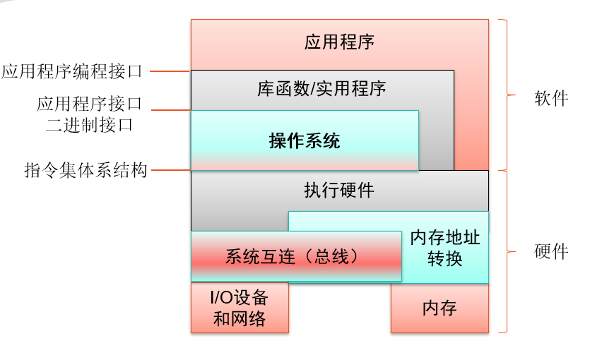
操作系统目标与功能
目标
其3个目标为:
- 方便: 使计算机更易于使用
- 有效: 允许以更有效的方式使用计算机系统资源
- 扩展能力: 在不妨碍服务的前提下，有效地开发、测试和引入新的系统功能
以下介绍计算机是如何实现上述的3个目标
OS是用户／计算机接口
如果用户开发应用软件时需要完全使用机器指令来进行描述将会使得开发任务复杂且繁重，而OS将一部分机器指令提供了一定的库函数、实用工具，从而简化了应用软件的开发过程
OS为程序员屏蔽了硬件细节，并为程序员使用系统提供了方便的接口，使程序员及应用程序更容易地访问与使用这些功能和服务
因此OS实现了使计算机更易于使用
OS是计算机资源管理器
计算机是由各种不同部件构成的机器，包括CPU、内存、外存、总线等，并由这些部件提供一定的计算资源、存储资源
计算机的资源是有限的，而OS能够进行资源的调度，由OS来将不同的资源分配给不同的任务，从而实现计算机资源的高效利用
OS具有良好的扩展性
由于硬件升级和新型硬件的出现、新的服务需求的提出，同时以前的OS被发现了错误，OS需要不断地更新从而满足改变，因此OS被设计成了模块化的结构，并且具有详细的模块接口和文档说明，才能做到具有良好的扩展性
功能
OS的基本功能是提供用户使用计算机系统的接口:
- 进程管理
- 存储管理
- I/O设备管理
- 文件管理
具体功能:
- 程序开发: 如编辑器和调试器
- 程序运行: 如将程序加载到内存
- I/O设备访问: 隐藏具体的I/O操作指令
- 文件访问控制: 屏蔽存储介质细节
- 系统访问: 提供接口，防止未授权访问行为
- 错误检测和响应: 软硬件错误
- 记账: 收集资源的利用率信息、监控性能特性
操作系统发展史
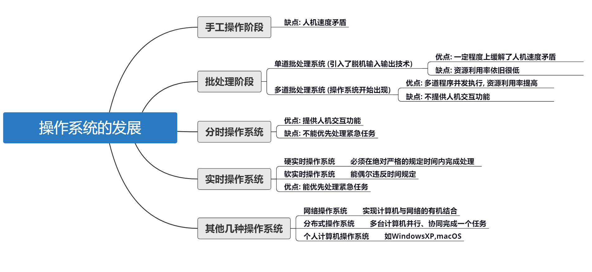
串行处理
无操作系统，由手动将程序输入到计算机内，由计算机执行后得到输出
简单批处理
出现了监控程序(Monitor)，可以将一批程序放入计算机，然后由Monitor按顺序将每个程序交给计算机处理，处理完成后再返回Monitor，由Monitor放入下一个程序
Monitor功能:
- 自动续接: 将作业按顺序交给计算机
- 内存保护: 计算机内存中只能同时存在一道作业，并且作业不能修改Monitor的内存空间
- 定时器: 防止某作业独占系统
- 特权指令: 将计算机的运行模式分为了内核模式和用户模式
- 中断: 早期计算机模型无此能力
多道批处理
I/O设备相对于处理器而言速度太慢，因此对简单的批处理而言，大多数时间均花费在IO上，处理器占用率很低
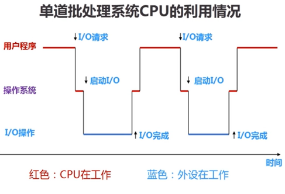
多道批处理则是通过利用IO时间来执行其他作业的操作系统
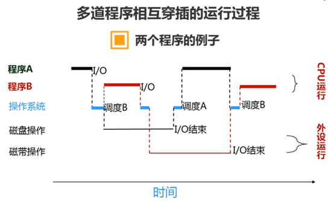
多道批处理功能:
- 内存管理: 内存中需要放多个作业
- 作业调度: 需要进行多个作业的调度
- 中断: CPU需要得知IO操作完成
- DMA: IO操作无需处理器参与
分时系统
多道批处理系统提高了对处理器的利用率，但由于只处理批作业而无法进行实时的交互，因此出现了分时系统
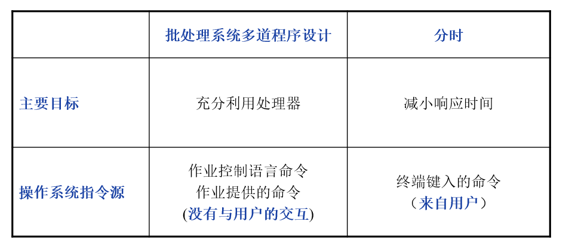
分时系统的特征:
- 多路性
- 独立性
- 及时性
- 交互性
实时系统
实时系统能够及时(即时)响应外部事件的请求，在规定的时间内开始或完成对该事件的处理，并控制所有实时任务协调一致地运行
实时系统的特征:
- 可确定性
- 可响应性
- 用户控制
- 可靠性
- 故障弱化能力
操作系统主要成就
操作系统的4个重要理论进展，这4个领域包括现代操作系统设计和实现中的关键问题:
- 进程
- 内存管理
- 信息保护和安全
- 调度和资源管理
操作系统特征
- 微内核: 只给内核分配一些最基本的功能，可以简化实现、提供灵活性和适用于分布式环境
- 多线程: 把执行一个应用程序的进程划分为可以同时运行的多个线程
- 对称多处理: 多个处理器或多核
- 分布式操作系统: 使用不同物理机构成一个抽象意义机器
- 面向对象设计: 使得操作系统的扩展性更好
操作系统的容错率
容错性指系统或部件发生软/硬件错误时，能够继续正常运行的能力
容错性的相关技术:
- 进程隔离: 进程的内存、文件存取和执行过程相互隔离
- 并发控制: 采用并发控制保证进程通信或协作时的正确性
- 虚拟机: 提供更高程度的应用隔离和错误隔离
- 检测点和回滚机制: 检测点是先前程序状态的一个副本。回滚则从检测点重新开始执行
多处理器与多核操作系统
多处理器上的操作系统设计不仅要提供多道系统的所有功能，而且必须提供适应多处理器的额外功能
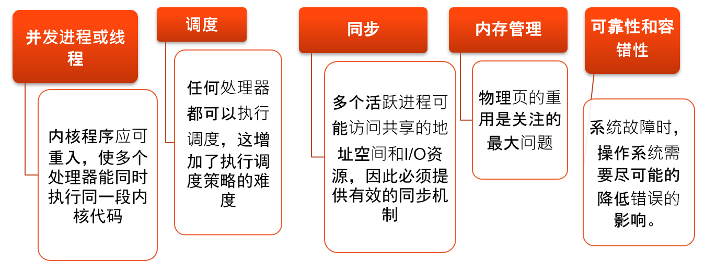
多处理器OS的并行能力:
- 处理器并行: 多个软件可以在不同处理器上并行执行
- 进程/线程并行: 每个处理器可以在不同进程/线程上切换，从而实现进行/线程并行
- 指令并行: 核内指令也可以并行
主流操作系统
Windows
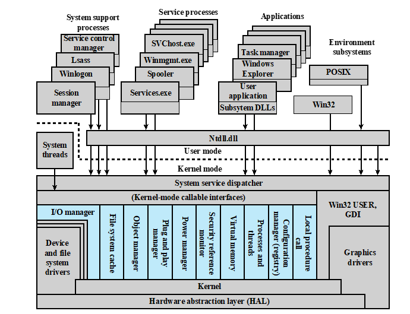
四种基本的用户模式进程
- 特殊系统进程: 管理系统所需的用户模式服务
- 服务进程: 后台打印程序、网络服务程序(Mysql)等
- 环境子系统: 操作系统个性化设置
- 用户应用程序: 为充分利用系统功能而为用户提供的可执行程序和动态链接库(connect.exe、Win32.dll等)
Windows的操作系统服务、受保护子系统和应用程序都采用客户-服务器模型构建，服务端与客户端通过RPC通信
传统Unix
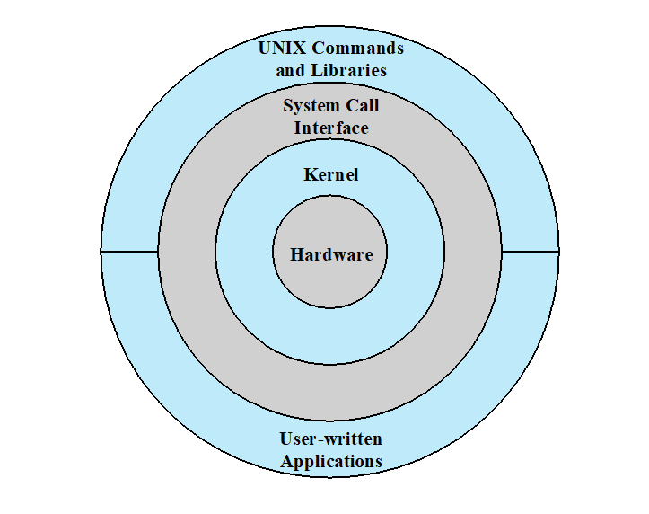
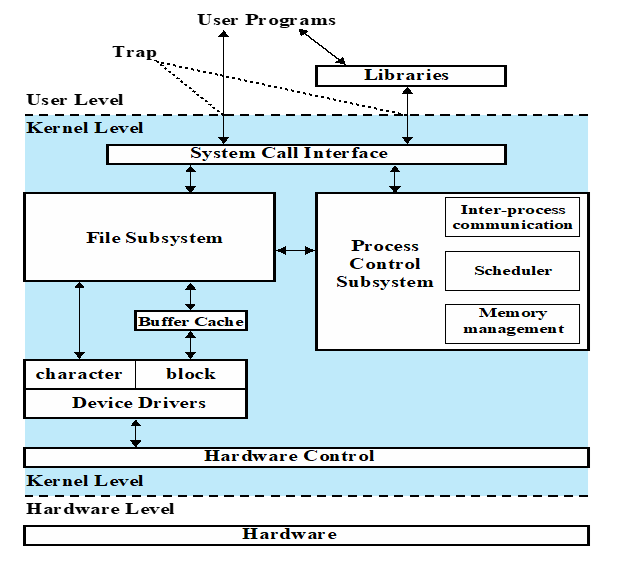
现代Unix
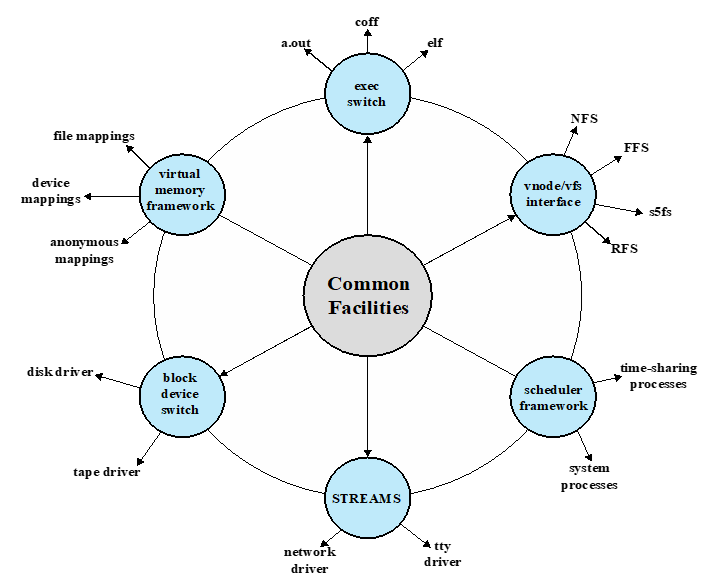
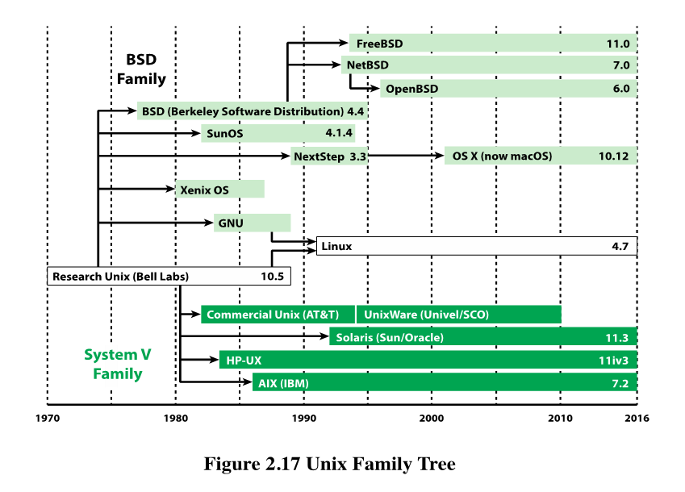
Linux
Linux是模块化的宏内核，其在一大块代码中包含了所有的操作系统功能，作为单个进程运行，具有唯一的地址空间，并且所有的功能部件都可以访问内核数据结构和例程
同时Linux具有很多可加载模块，可以在内核在运行时可以链接或断开链接
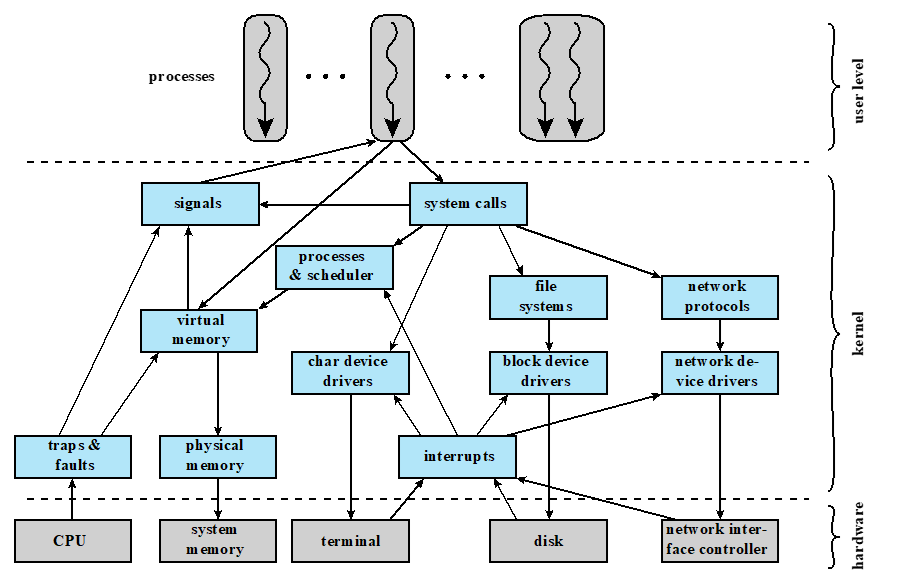
Android
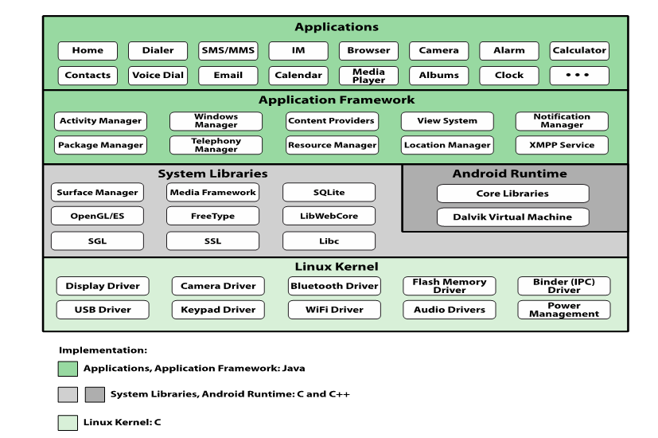
本博客所有文章除特别声明外，均采用 CC BY-SA 4.0 协议 ，转载请注明出处！